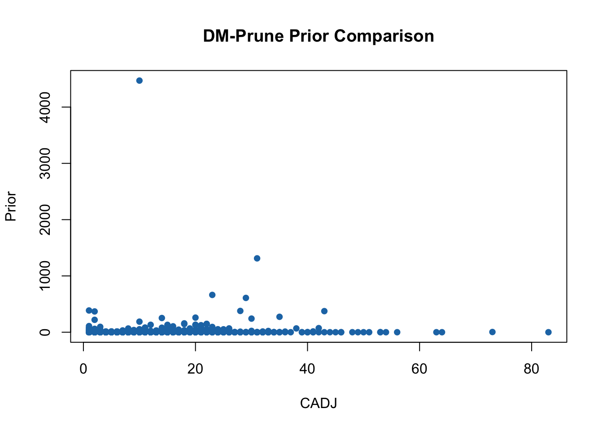

Chapter 4 Pruning
Ideally, data structure (i.e., clusters) can be readily discerned from the CONNvis (or CADJvis) of a learned SOM via identification of its closed and connected (graph) communities. In practice, particularly for noisy data, CONNvis does not immediately indicate cleanly separated closed communities. This situation is depicted below, where the SHGR CONNvis has been visualized atop its “labeled lattice.” Lattice labeling results from propagating the known (true) data labels to the lattice via the SOM mapping; here, the 20 distinct colors painted in each neural cell represent the 20 distinct truth labels of the SHGR image cube.
## Visualize the SOM labels
SOMDisco::vis_som_label(SOM=SHGR.som,
text.cex = 0.8, text.font = 2, rprop = 0)
## Add CONNvis to the labeled SOM
SOMDisco::vis_som_label(SOM = SHGR.som, text.cex = 0)
SOMDisco::vis_som_CONNvis(SOM = SHGR.som, TRN = SHGR.trn, add = T)Figure 4.1: CONNvis Communities vs. True Clusters
While the truth labeling highlights the organization of the SHGR SOM, CONNvis is not completely disconnected along every cluster boundary visible on the lattice: notably, the clusters F & M, K & N, H & P, D & T, and A & R are connected by the CONN graph. In real unsupervised learning settings we do not have the truth labels to propagate to the SOM for inspection; in such situations relying on the CONNvis, as shown, can lead to improper cluster inference.
4.1 Grid Pruning
The obvious solution is to enforce further sparsity to CADJ or CONN (a process known as pruning) to help facilitate inference of its community structure. Because pruning CADJ/CONN introduces the possibility of destroying real clusters of neurons, with the introduction of CONNvis Taşdemir and Merényi introduced sensible methodology to guide the pruning process along a grid defined by the sets of unique local and global edge ranks. Intuitively, edges of low local or global rank are prime candidates for pruning. What constitutes “low” changes, of course, with every dataset. A conservative approach to defining “low rank” in a particular setting is formed by studying summary statistics of CADJ/CONN weights, grouped by rank. Ranks which primarily contain low-weight edges can usually be safely removed from the graph without deleterious impact on prominent cluster structure. TopoRNet provides built-in visualization functions for viewing these grouped statistics:
## CONNvis Stats by local rank
TopoRNet::vis_CONNvis_stats(TRN=SHGR.trn, group_by='lrank')
## CONNvis Stats by global rank
TopoRNet::vis_CONNvis_stats(TRN=SHGR.trn, group_by='grank')Figure 4.2: CADJ/CONN Graph Statistics
The above displays the CONN edge weight summary statistics (median + IQR + whiskers) grouped by the unique local and global edge ranks found in the graph. As the series of boxplots show, edges with both local and global rank \(> 5\) have reliably low weights, suggesting their removal would not dramatically impact cluster inference from the SHGR CONNvis. A TRN object has many built-in tools to remove edges from either the CONN or CADJ graph (see the help documentation for any of the prune_CADJ_* or prune_CONN_* methods). Here, we prune CONN edges whose local and global rank is \(> 5\):
## Prune CONN local ranks > 5
SHGR.trn$prune_CONN_lrank(5)
% Set 440 CONN edges inactive.
## Prune CONN global ranks > 5
SHGR.trn$prune_CONN_grank(5)
% Set 866 CONN edges inactive.Note that the status messages from pruning indicate the number of edges that were inactivated by the method call. Edges are never removed entirely from the TRN object; instead, they are set as “inactive”. At any point we can view the status of an edge, i.e., whether it is active (=1), or inactive (=0), via:
For example, the edge list of the first few edges inactivated by the above pruning can be retrieved via:
head(SHGR.trn$CONN_EL[SHGR.trn$CONN_active==0, ])
% [,1] [,2]
% [1,] 3 1
% [2,] 22 1
% [3,] 83 1
% [4,] 84 1
% [5,] 1 3
% [6,] 45 3Any previous pruning can be reversed by restoring all edge statuses to active:
## Un-do the above CONN pruning
SHGR.trn$restore_CONN_edges()
## Check that all edges are active
any(SHGR.trn$CONN_active == 0)
% [1] FALSEThe CONNvis (CADJvis) visualization functions exposed by TopoRNet only show active edges. Compared to the original CONNvis, we can see that pruning according to the above criteria, guided by the CONNvis group statistics, produces a graph which retains most of its important structure but is noticeably cleaner:
## Original CONNvis, with underlying labels
SOMDisco::vis_som_label(SOM = SHGR.som, text.cex = 0)
SOMDisco::vis_som_CONNvis(SOM = SHGR.som, TRN = SHGR.trn, add = T)
## Re-prune according to the above, and visualize
SHGR.trn$prune_CONN_lrank(5)
% Set 440 CONN edges inactive.
SHGR.trn$prune_CONN_grank(5)
% Set 866 CONN edges inactive.
SOMDisco::vis_som_label(SOM = SHGR.som, text.cex = 0)
SOMDisco::vis_som_CONNvis(SOM = SHGR.som, TRN = SHGR.trn, add = T)Figure 4.3: CONNvis Pruning Comparison
4.2 DM-Prune
Grid pruning, discussed above, is relatively simple and intuitive but lacks any mechanism to suggest optimal pruning levels. For example, clusters F & M, K & N and D & T were not cleanly separated by the grid pruning threshold levels selected above; more aggressive grid pruning might result in cleaner separation, but there is no barometer of how aggressive one should be in each particular data setting. As such, several grid pruning levels are typically specified (based on analysis of, e.g., the above rank statistics) and the resulting pruned CONNvis assessed for clarity. The DM-Prune procedure ([9], [10]) was introduced to facilitate the process of selecting optimal pruning levels via more formal statistical modeling.
DM-Prune is designed for the CADJ graph (not CONN) and comprises two steps. The first assigns a “quality” score \(\mu\) to each CADJ edge following the same logic that human analysts use when assessing edge quality. \(\mu\) is defined as the geometric mean of the local and global strength of each edge, a factor representing the edge’s length on the SOM lattice (longer connections, resulting from forward topology violtions of the SOM mapping, are considered less reliable), and an optional fourth component representing edge reliability (derived from bootstrapped re-sampling of the CADJ graph). Each component contributing to the mean is normalized to \([0,1]\), with the convention that \(\mu \to 0\) signals lower edge quality. Edges are then ranked by their (increasing) \(\mu\) score, with the unique set of ranks defining an (ordered) set of pruning steps. At each pruning step \(t\), edges whose \(\mu\)-rank is \(< t\) are removed from the graph.
A Dirichlet-Multinomial (DM) likelihood of the sparse set of CADJ edge weights monitors the effects of pruning over “time” \(t\). Recall from Section 2 that the edge weights \(CADJ_{ij}\) are counts of sample data which are contained in the second-order Voronoi cell \(V_{ij}\) generated by the set of learned prototypes \(W\). As a set of counts in each (highly irregular) second-order Voronoi “bin”, the Multinomial likelihood is the natural statistical model for CADJ. When combined with a Dirichlet prior on the bin probabilities, the Dirichlet-Multinomial likelihood, re-computed at the increasingly sparse set of CADJ counts resulting from pruning at each step \(t\), provides a formal model of the impact of removing a particular set of edges from the CADJ graph.
Moreover, specific Dirichlet priors allow an analyst the flexibility to incorporate new types of information into the modeling procedure. For instance, the Uniform prior (i.e., when all Dirichlet pseudocounts = 1) is commonly used to indicate uninformed prior beliefs. In this setting, where each Multinomial bin \(V_{ij}\) is a geometric object in \(\mathbb{R}^d\), a more natural “uninformed” prior belief of each bin’s count is proportional to its volume (i.e., for completely unstructured data, larger bins should intuitively have higher counts). The DM-Prune methodology recommends use of this latter volume-based prior to incorporate more of the manifold knowledge uncovered during SOM learning. A plot of the DM-likelihood calculated at each pruning step \(t\) (under a user-specified prior) is known as the DM-Prune \(\Lambda\)-path.
The companion R package VorVQ provides a way of estimating these Voronoi volumes via ellipsoid approximations to each second-order Voronoi bin. The SHGR.VORList variable included with TopoRNet contains the (partial) results of this computation for the SHGR SOM, which we use to construct a prior for CADJ below, in the form of an adjacency matrix whose dimensions match CADJ. The prior adjacency should be positive everywhere that CADJ is positive.
## Initialize an empty adjacency matrix
## with the same dimensions as CADJ
priorCADJ = 0*SHGR.som$CADJ
## Populate the entries corresponding to non-zero CADJ
## values with the pre-computed volumes of the corresponding
## second-order Voronoi Maximum Volume Inscribed Ellipsoids (MVIEs).
## The vor2_MVIE_volratio field of a VOR object stores these volumes,
## normalized to sum to 1.
priorCADJ[TopoRNet::SHGR.VORList$vor2_active] =
TopoRNet::SHGR.VORList$vor2_MVIE_volratio
## Check that the prior is positive everywhere that CADJ is positive
any(c(priorCADJ[SHGR.som$CADJ > 0]) <= 0)
% [1] FALSE
## Check that the volume ratios sum to 1
sum(priorCADJ)
% [1] 1
## Re-normalize, such that the prior pseudo-counts
## equal the sum of CADJ weights
priorCADJ = priorCADJ * sum(SHGR.som$CADJ)Once constructed, the CADJ prior (in adjacency-matrix format) is used to calculate the DMP-Prune \(\Lambda\)-path of a TRN object:
## Calculate the DM-Prune Lambda Path,
## given a user-specified prior
SHGR.trn$calc_DMPrune_LambdaPath(priorCADJ)
% Building DM-Prune Lambda Path:
% ----------------------------------------------------------------
% ++ gamma values: G = 1, N = 1, L = 1, S = 1
% No bootstrap edge significances found, skipping.
% Call $set_BootSig to incorporate.
% Checking & storing prior ... done
% ----------------------------------------------------------------
% Computing mu scores:
% ++ mu_G (global) ... done
% ++ mu_N (local) ... done
% ++ mu_L (length) ... done
% ++ aggregate mu ... done
% ++ ranking mu ... done
% ----------------------------------------------------------------
% Computing Lambda Path ... doneThe method calc_DMPrune_LambdaPath first stores the given prior, which can be accessed anytime via
## The prior values corresponding to the first few CADJ edges
head(c(SHGR.trn$DMP_prior))
% [1] 3.88246376 0.24885308 9.79543750 0.04908458 0.24244421 0.34280694A scatter plot comparing each prior value to its corresponding CADJ count is automatically produced, allowing an analyst to assess the relationship between the prior and observed CADJ values. Intuitively, edges with low CADJ weight but high prior values are likely causing the most negative impact to DM-likelihood model.
Additionally, the individual and aggregate \(\mu\)-scores, and the overall \(\mu\)-rank for each edge, are computed and stored. These can be accessed via:
## For the first few CADJ edges ...
## Global mu-score
head(c(SHGR.trn$DMP_mu_G))
% [1] 0.30120482 0.02409639 0.33734940 0.01204819 0.01204819 0.01204819
## Local mu-score
head(c(SHGR.trn$DMP_mu_N))
% [1] 1.00000000 0.14285714 1.00000000 0.09090909 0.02777778 0.04000000
## Length mu-score
head(c(SHGR.trn$DMP_mu_L))
% [1] 1.000000000 0.965517241 1.000000000 1.000000000 0.001231527 0.001231527
## Composite mu-score
head(c(SHGR.trn$DMP_mu))
% [1] 0.670327915 0.149235209 0.696134749 0.103080474 0.007441968 0.008403792
## mu-rank, 1 = lowest composite mu-score
head(c(SHGR.trn$DMP_mu_rank))
% [1] 634 272 641 235 79 92The (sorted) set of unique \(\mu\)-ranks define the possible DM-Prune steps \(t\) are also stored
and the resulting \(\Lambda\) values (the normalized DM-likelihood) computed after sparsifying all edges from the model whose \(\mu\)-rank is \(<\) each step \(t\) can be accessed via
While the \(\Lambda(t)\) values are available for extraction they are most useful when plotted via the vis_DMPrune_LambdaPath function, which takes a TRN object (whose \(\Lambda\)-path has been previously set) as input:
## Visualize the SHGR Lambda-path
TopoRNet::vis_DMPrune_LambdaPath(TRN = SHGR.trn)
% !! Lambda Path Visualization !!
% ----------------------------------------------------------
% max(Lambda) = -2.2 found at step = 467
% Lambda path intersects its starting value at step = 640
% Change points identified at steps:
% 268 577 640 673
% ----------------------------------------------------------Figure 4.4: SHGR \(\Lambda\) Path
vis_DMPrune_LambdaPath also produces plots of the first and second-order finite differences of the \(\Lambda\)-path to further highlight points of (rapid) change in the path. Additionally, several time steps of interest (discussed below) are marked on the path as blue and green points.
The idea behind DM-Pruning is to successively remove CADJ edges until the DM-likelihood begins to noticeably deteriorate. The SHGR \(\Lambda\)-path displays a visible increase in likelihood as edges are removed, until step \(t = 467\) (marked with a blue point). In statistics, parameterizations are often governed by the \(\arg \max\) of a model likelihood and the DM-Prune procedure recommends this step as a focal point for pruning decisions as well. Removing low-quality edges from the graph should improve the DM model fit (assuming the model is correctly specified), so the likelihood peak visible above is not entirely unsurprising. However, as work is ongoing to determine the fidelity and responsiveness of the DM-likelihood to salient cluster structure, alternative suggestions for an optimal pruning step are also marked in green. These alternative suggestions arise from variance changepoint analysis of the \(\Lambda\)-path and are intended to highlight pruning steps which precede larger swings in the path, signaling significant model changes. For the SHGR SOM, a conservative approach would stop pruning around step \(t = 268\), while a more aggressive approach would continue pruning until step \(t = 577\). For now, we suggest human assessment of several pruned CADJ graphs in this range. Below, we DM-Prune the CADJ graph at each of the suggested steps and compare the resulting CONNvis:
## DM-Prune at t=268
SHGR.trn$DMPrune_CADJ_step(268)
% Set 571 CADJ edges inactive.
## Propagate CADJ pruning to the CONN graph
SHGR.trn$prune_CONN_CADJ()
## View the resulting CONNvis
SOMDisco::vis_som_label(SOM = SHGR.som, text.cex = 0)
SOMDisco::vis_som_CONNvis(SOM = SHGR.som, TRN = SHGR.trn, add = T)
## Restore all pruned edges
SHGR.trn$restore_CADJ_edges()
SHGR.trn$restore_CONN_edges()
## DM-Prune at t=467
SHGR.trn$DMPrune_CADJ_step(467)
% Set 1250 CADJ edges inactive.
## Propagate CADJ pruning to the CONN graph
SHGR.trn$prune_CONN_CADJ()
## View the resulting CONNvis
SOMDisco::vis_som_label(SOM = SHGR.som, text.cex = 0)
SOMDisco::vis_som_CONNvis(SOM = SHGR.som, TRN = SHGR.trn, add = T)
## Restore all pruned edges
SHGR.trn$restore_CADJ_edges()
SHGR.trn$restore_CONN_edges()
## DM-Prune at t=577
SHGR.trn$DMPrune_CADJ_step(577)
% Set 1557 CADJ edges inactive.
## Propagate CADJ pruning to the CONN graph
SHGR.trn$prune_CONN_CADJ()
## View the resulting CONNvis
SOMDisco::vis_som_label(SOM = SHGR.som, text.cex = 0)
SOMDisco::vis_som_CONNvis(SOM = SHGR.som, TRN = SHGR.trn, add = T)
## Restore all pruned edges
SHGR.trn$restore_CADJ_edges()
SHGR.trn$restore_CONN_edges()Figure 4.5: DM-Pruned SHGR CONNvis
The conservative pruning at \(t = 268\) is very similar to the grid-pruned CONN discussed above, failing to properly separate clusters F & M, K & N and D & T, while the aggressive pruning at \(t=577\) has left the graph mostly disconnected into tiny neuron islands. The pruning at \(t^* = 467 = \arg\max \Lambda(t)\) has produced a graph with most of these problems rectified, except for one boundary violation between clusters F & M.
Note that in each group of function calls above we have first pruned the CADJ graph via the method DMPrune_CADJ_step, which takes as input a step \(t\) and sets all CADJ edges whose \(\mu\)-rank is \(<\) as inactive. The set of CONN edges corresponding to the resulting set of inactive CADJ edges in each case is inactived via prune_CONN_CADJ, and the CONNvis of the pruned CONN is visualized. This was done in order to view CONNvis, which is the more common visualization but only operates on the symmetric CONN graph. The CADJvis of the above could have been viewed instead, if preferred:
## DM-Prune at t=268
SHGR.trn$DMPrune_CADJ_step(268)
% Set 571 CADJ edges inactive.
## View the resulting CADJvis
SOMDisco::vis_som_label(SOM = SHGR.som, text.cex = 0)
SOMDisco::vis_som_CADJvis(SOM = SHGR.som, TRN = SHGR.trn, add = T)
## Restore all pruned edges
SHGR.trn$restore_CADJ_edges()
## DM-Prune at t=467
SHGR.trn$DMPrune_CADJ_step(467)
% Set 1250 CADJ edges inactive.
## View the resulting CADJvis
SOMDisco::vis_som_label(SOM = SHGR.som, text.cex = 0)
SOMDisco::vis_som_CADJvis(SOM = SHGR.som, TRN = SHGR.trn, add = T)
## Restore all pruned edges
SHGR.trn$restore_CADJ_edges()
## DM-Prune at t=577
SHGR.trn$DMPrune_CADJ_step(577)
% Set 1557 CADJ edges inactive.
## View the resulting CADJvis
SOMDisco::vis_som_label(SOM = SHGR.som, text.cex = 0)
SOMDisco::vis_som_CADJvis(SOM = SHGR.som, TRN = SHGR.trn, add = T)
## Restore all pruned edges
SHGR.trn$restore_CADJ_edges()Figure 4.6: DM-Pruned SHGR CADJvis
Note also that after each round of pruning all CADJ and CONN edges were restored. This was not necessary in this case as DM-Pruning is hierarchical, meaning that the pruned graph at step \(t_2\) is a sub-graph of the graph pruned at \(t_1\) if \(t_2 > t_1\). In general, however, the effects of pruning a TRN (via any of the prune_CADJ_* or prune_CONN_* methods) should be reversed prior to re-pruning with a different set of criteria for proper comparison.
References
[9] J. Taylor and E. Merényi, “A probabilistic method for pruning cadj graphs with applications to som clustering,” in Advances in self-organizing maps, learning vector quantization, clustering and data visualization, 2020, pp. 44–54.
[10] J. Taylor and E. Merényi, “DM-pruning cadj graphs for som clustering,” Neural Computing and Applications.